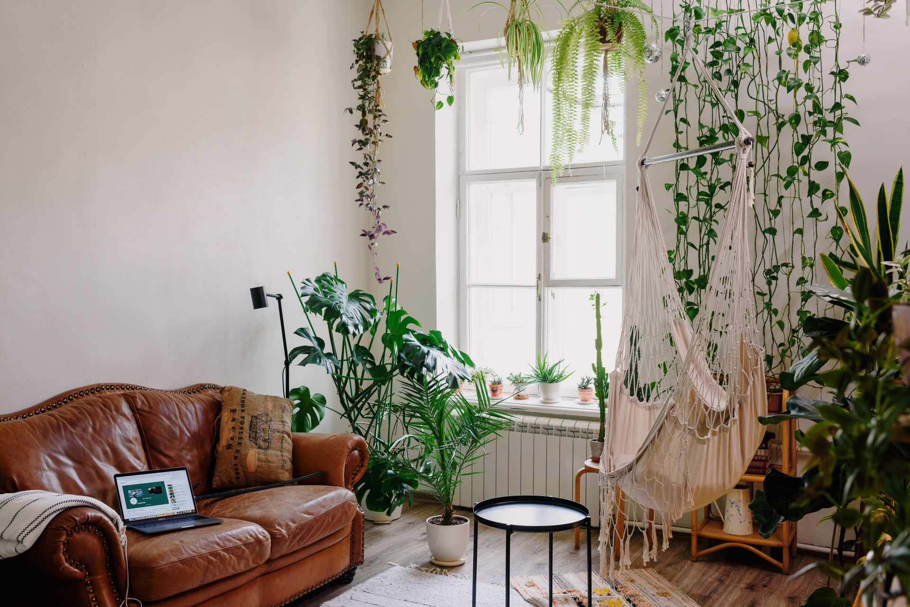
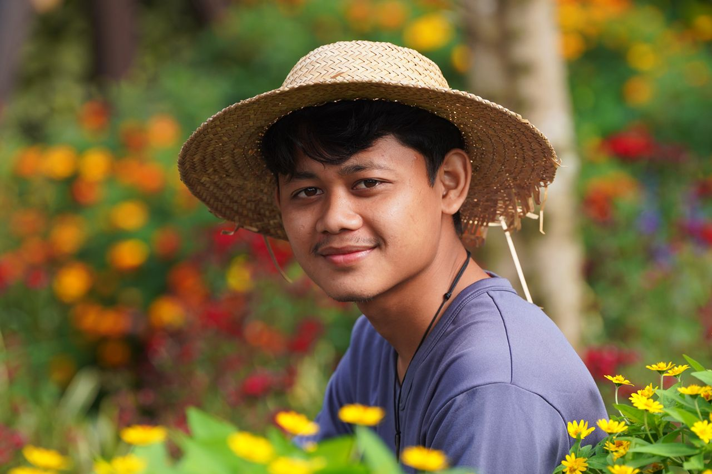

“Monstera Adansonii tiba dalam kondisi sangat segar dan pot terracottanya rapi sekali. Kartu panduan penyiramannya benar-benar membantu.”
Koleksi Musim Ini · Langsung dari Kebun
Hadirkan ketenangan hijau di setiap sudut rumah.
Tanaman hias sehat pilihan dengan pot tanah liat dan keramik berkualitas, dikemas khusus agar tiba segar siap menghuni ruang Anda.
Garansi 14 Hari Tiba Segar · Kartu Panduan Rawat Gratis

Pilihan Editor Monstera Adansonii Mulai Rp 65.000Kurasi Akar Sehat
Dipilih langsung dari kebun rawat sebelum dikemas.
Kemas Media Lembap
Perlindungan khusus agar daun tetap utuh di perjalanan.
Pot Tanah Liat & Keramik
Tersedia pilihan warna pot yang menyatu dengan interior.
Panduan Perawatan
Petunjuk cahaya dan jadwal siram di setiap pengiriman.
Belanja Berdasarkan Kategori
Lihat Semua Kategori
Temukan Karakter Tanaman Anda
Favorit Pelanggan
Jelajahi Katalog Lengkap
Tanaman Terlaris

Filosofi Kebun Vegetale
Dirawat dengan telaten sebelum menghuni ruang Anda.
Kami percaya setiap ruangan terasa lebih tenang saat dihuni tanaman yang sehat. Bersama petani lokal di Malang, kami menyeleksi bibit berakar kuat dan memadukannya dengan media tanam berpori agar mudah dirawat pemula sekalipun.
1.400+
Rumah dihijaukan
4.9/5
Rating pelanggan
14 Hari
Garansi tiba segar
Ulasan Terverifikasi
Cerita dari Ruang Mereka
“Filter tingkat perawatan dan cahaya di katalog membuat saya gampang memilih tanaman untuk sudut kamar yang agak teduh.”
“Bonsai beringin koreanya sangat rapi untuk hadiah pindah rumah. Tracking pengiriman di dashboard akun juga sangat informatif.”